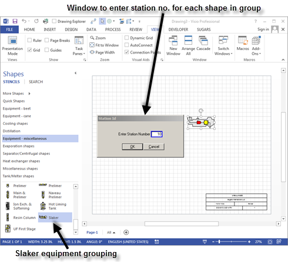
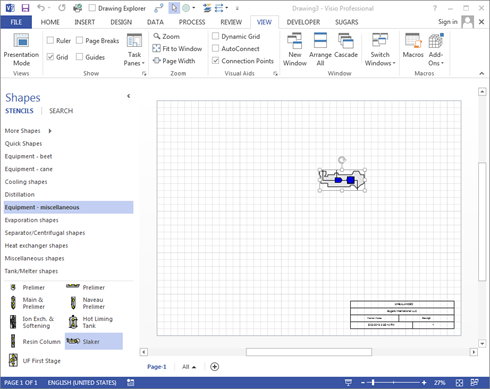
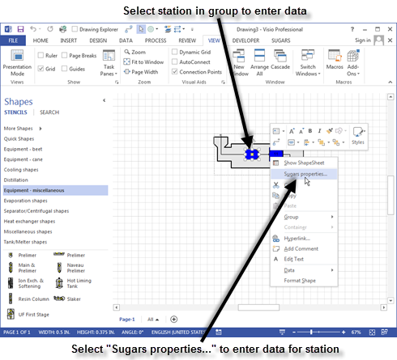

Stations can be grouped together to represent an actual station in the process. Many pre-built groups that represent factory equipment are included on the stencils provided with Sugars. For example, the "Equipment - miscellaneous" stencil includes a slaker. The window below shows the slaker being added to the model.

Sugars will index through each station in the grouping to assign station numbers to all of the stations in the group. The station being numbered will turn red until the number is assign in the Sugars station Id window box, and after the station number is assigned, the station will turn blue. All stations will be blue following the numbering of the stations in the group (see window below).

Performance data for each station in the group is entered by double clicking on the station in the group, or clicking once on the shape to give selection handles around the station selected and then clicking the right mouse button and selecting the Sugars properties… menu item from the drop-down menu (see window below).).

Be sure to select the station in the group and not the grouping when selecting stations for data entry. If the Sugars properties window does not appear after it is selected from the right click drop-down menu, then the grouping that makes up the station shape was selected instead of the station.